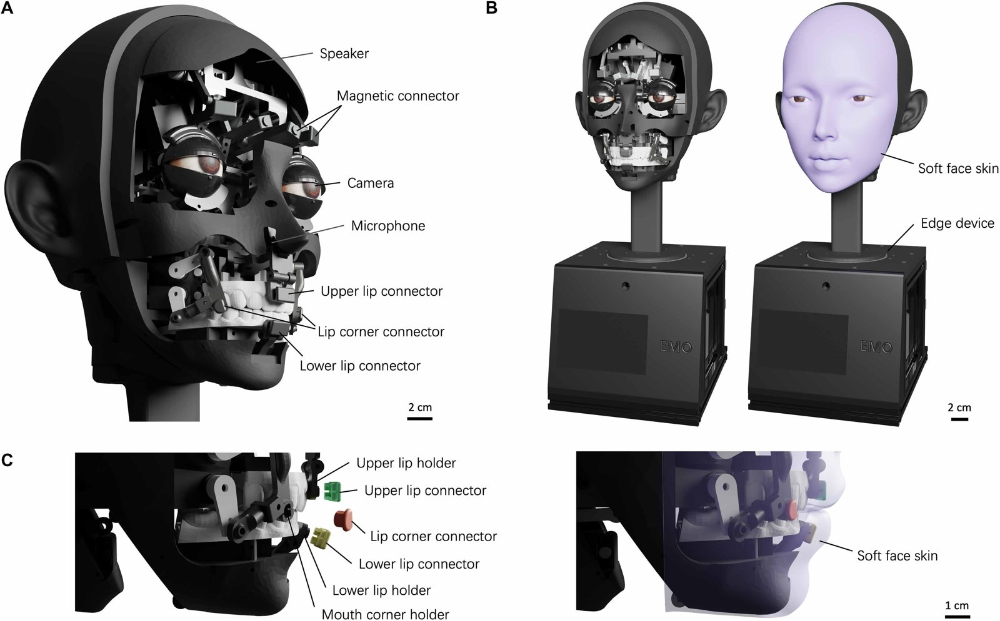
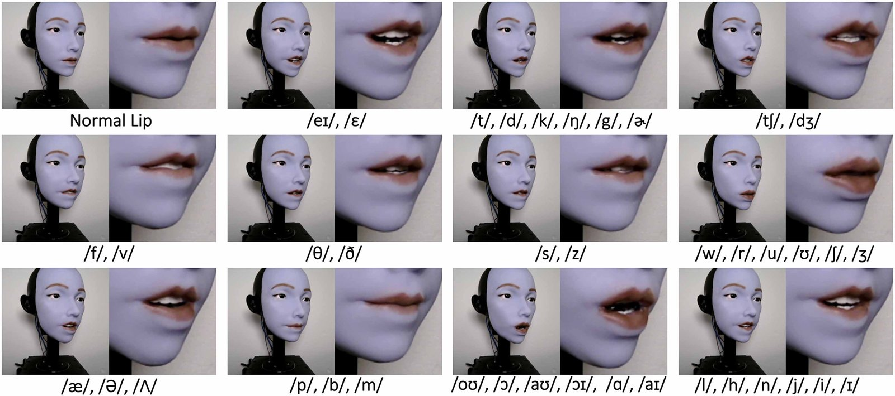
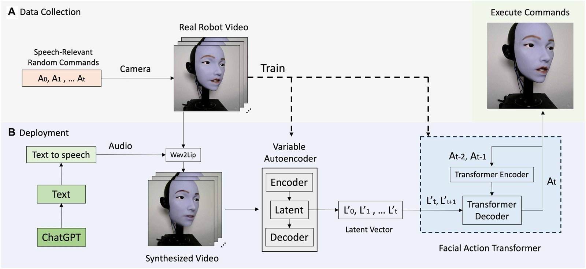
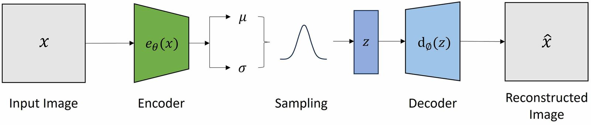
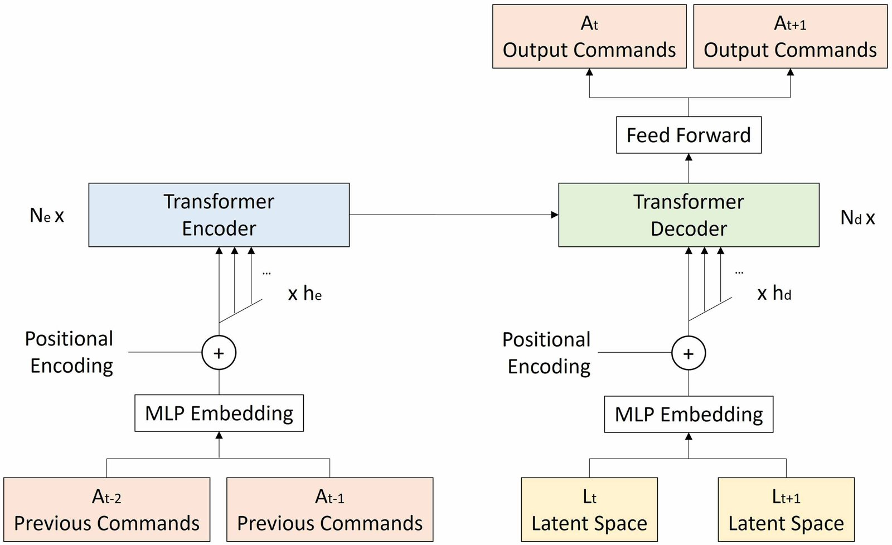
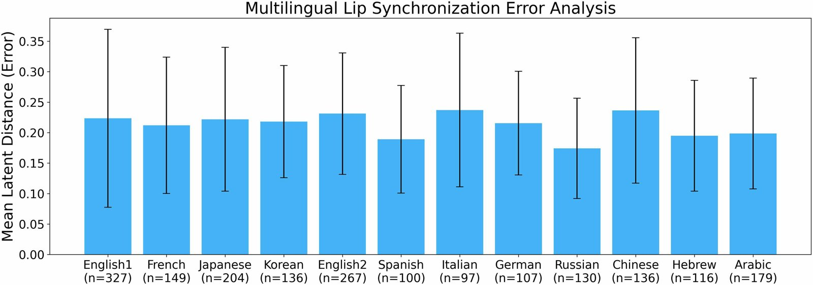

Learning realistic lip motions for humanoid face robots 论文总结¶
论文：Yuhang Hu, Jiong Lin, Judah Allen Goldfeder, Philippe M. Wyder, …, Boyuan Chen, Hod Lipson. Learning realistic lip motions for humanoid face robots. Science Robotics 11, eadx3017，2026-01-14（2025-03-07 投稿，2025-12-10 接收）
链接：DOI · Science 官网
代码 / 模型：Zenodo 17804235 ｜ 数据：Dryad j6q573nrc
团队：哥伦比亚大学 Creative Machines Lab（Hod Lipson）。一作和团队与 Emo 共同表情论文 相同，可以看作它的"口型"续篇。
阅读范围：正文 12 页加参考文献已全部读完。补充材料（问卷细节、图 S1、表 S1–S3、视频 S1–S5）不在这份 PDF 里。
对比对象：NVIDIA Audio2Face-3D 仓库总结
整理日期：2026-10-28
1. 一句话概括¶
做了一张嘴部有 10 个自由度、带软硅胶嘴唇的机器人脸，再用一条自监督管线让它"自己学会"对口型：先让机器人乱动嘴巴（motor babbling）并拍下来，然后用 Wav2Lip 把 TTS 语音"贴"到机器人脸的视频上，得到"理想的说话视频"；接着用 VAE 把真实帧和合成帧映射到同一个 16 维隐空间，最后用 Facial Action Transformer（FAT） 把隐向量序列翻译成平滑的电机指令。论文称这套方法在只用英语数据的前提下，可以泛化到另外 10 种语言。
2. 它要解决什么问题¶
作者在摘要和引言（PDF p.1）中给出两个障碍：
障碍一：机械结构不够复杂。 传统的机器人脸大多只有"下巴开合"这一个动作，并且是拉线驱动（只能拉、不能推），做不出抿嘴、噘嘴、咬下唇这类形状。
障碍二：同步方法靠手工规则。 过去的做法是按音素分类，为每一类手写一个口型和时长（参考 Ishi 2012 共振峰法（IROS 2012，文献 14）、Strathearn & Ma 2021 音素→动作），不仅费时费力，而且数据再多也不会变好。
至于数字人方向的方法（Wav2Lip、VOCA、MeshTalk、CodeTalker），作者在 p.2（PDF p.2） 中指出它们假设网格可微、没有执行器限制；而真实机器人需要面对舵机惯性、弹性皮肤的反拉力和碰撞边界。这一点正是它和 Audio2Face 的根本分界线（见第 6 节）。
3. 硬件（p.2–3，图 1、图 2（PDF p.3））¶

| 部位 | 自由度 | 说明 |
|---|---|---|
| 嘴角 | 2 对（4） | 每侧两个电机叠放，形成 2D 运动平面，可以回缩、也可以外凸（噘嘴） |
| 上唇 | 3 | 连接件下降时向外翻，模仿发 "w/r/u" 时的噘唇 |
| 下唇 | 2 | 抬起时欠驱动的转轴向外摆，保持与软唇的柔顺接触 |
| 下颌 | 1 | — |
| 合计 | 10 | 执行器既能推也能拉皮肤，克服了拉线机构只能拉的缺点 |
其他设计：皮肤通过磁吸快拆连接件固定，方便换皮和迭代（拉线机构则每次都要重新标定零点）；眼球里装有 RGB 相机，外加麦克风和扬声器，底座放边缘计算设备。论文称口型可以覆盖 24 个辅音和 16 个元音，并按照 Preston Blair 口型表 归为 12 类 viseme（图 2（PDF p.3））。

4. 方法¶
4.1 整体管线（p.4 图 3（PDF p.4））¶

数据采集（自监督，不需要人工标注）：机器人执行"与说话相关的随机指令"（motor babbling），相机录下嘴部，得到 (X_t, A_t) 图像-指令对，共 20,000 帧（公式 1，p.8（PDF p.8））。
部署：文本（由 ChatGPT 生成）→ TTS 得到音频 → Wav2Lip 以真实机器人视频为底，生成"机器人在说这句话"的合成视频 X'_t → VAE 编码器得到 L'_t → FAT 输出电机指令 A_t → 下发给真实机器人。
可以看出，音频→口型这一步实际上是 Wav2Lip 完成的。作者自己的模型解决的是"像素级口型→电机指令"，也就是一个视觉逆模型（自建模），并不是端到端的 audio-to-motor。摘要里"directly from speech audio"的说法偏宽松。
4.2 迭代匹配，生成"说话相关指令"（p.8 公式 3–5（PDF p.8））¶
对每一帧合成画面 X'_t，在 VAE 隐空间（ℝ¹⁶）中用欧氏距离找到最近的真实帧 L_i*，把它对应的指令 A_i* 记为"说话相关指令"。再加高斯噪声扩充数据，重复这个过程，4 轮后效果令人满意。这本质上是一个"在自己的动作库里检索 + 加噪探索"的自举过程，使 babbling 数据的分布逐渐向说话动作集中。
4.3 VAE：把合成画面拉进真实分布（p.8–9 图 6（PDF p.8））¶

训练分两步：先用 20,000 张真实帧预训练一个"real VAE"；再用真实帧加 5,173 张合成帧微调成"hybrid VAE"，同时约束 hybrid VAE 给出的隐向量和 real VAE 的保持一致，让 Wav2Lip 生成的画面落到真实机器人图像的隐空间里。损失函数是 MSE 重建损失加 KL 散度。隐向量维度为 16。
4.4 Facial Action Transformer（p.9 图 7（PDF p.9））¶

| 部分 | 输入 | 作用 |
|---|---|---|
| Transformer 编码器 | 过去的指令 A_{t-2}, A_{t-1}（MLP 嵌入 + 位置编码） |
记住嘴巴"刚才在哪"，保证连续性 |
| Transformer 解码器 | 当前和下一帧的隐向量 L_t, L_{t+1} |
看"要去哪"，提前准备过渡 |
| 输出 | A_t, A_{t+1} |
一次预测两帧指令，减少抖动 |
损失函数（公式 6–8，p.10（PDF p.10））：L_total = L_MAE + λ·L_closure。其中 closure loss 是单边惩罚，只针对上唇（0 号）、下唇（1 号）和下颌（4 号）三个执行器：如果预测的闭合程度"不够紧"就罚，用来保证 /b/ /p/ /m/ 这类双唇音能完全闭合。作者的理由是：闭不严的嘴，人一眼就能看出来。
数据增强：把 20,000 帧序列复制后倒序，得到 40,000 帧，让模型同时学到正向和反向的运动。
5. 实验结果¶
5.1 单词级（p.4–5 图 4（PDF p.5），p.10 分组说明（PDF p.10））¶
测试词分成 6 组，各自考察一个难点：亲属称谓（mama/papa，双唇音反复开合）、双唇音加长元音（blue/between）、/t/ 结尾的爆破音（mat/cat）、长元音保持（father/spa）、快速的双唇-爆破切换（bat/map）、塞擦音露齿（choose/jeep）。这部分只有定性展示（视频 S2）。
5.2 连续句子：隐空间 MSE（p.6 表 1（PDF p.6））¶
用 ChatGPT 生成 3 句话（原文见 p.11（PDF p.11）），评估指标是"合成帧隐向量"和"真实机器人执行后拍到的帧的隐向量"之间的 MSE。
| 方法 | 句 1（327 帧） | 句 2（702 帧） | 句 3（444 帧） |
|---|---|---|---|
| 本文 | 0.0140 | 0.0118 | 0.0136 |
| 平移 0.033 s（约 1 帧） | 0.0494 | 0.0563 | 0.0519 |
| 平移 0.5 s | 0.3606 | 0.3018 | 0.2966 |
| MediaPipe 关键点最近邻 | 0.4014 | 0.3711 | 0.3896 |
| 随机选指令 | 0.5366 | 0.5493 | 0.5771 |
| 音频幅度驱动下巴 | 0.6265 | 0.7637 | 0.8276 |
有两个现象值得注意。第一，"音频幅度驱动下巴"这种传统做法比随机选指令还差：随机采样至少来自说话相关动作的分布，而单自由度的下巴开合完全做不出圆唇、嘴角回缩。第二，MediaPipe 关键点只能描述嘴唇轮廓，区分不了"张嘴露齿"和"张嘴不露齿"（例如 /f/ 和 /a/），所以表现很差。这一点对后面讨论"用 blendshape 或关键点作为中间表示"很关键。
用户调研：与两个基线对比，62.5% 的人更偏好本文方法（P < 0.0001，卡方检验，机会水平 ⅓）。样本量等细节都在补充材料里。
5.3 多语言（p.6–7 图 5（PDF p.7））¶

测试 11 种语言（英、法、日、韩、西、意、德、俄、中、希伯来、阿拉伯），外加一个老年男声的英语。所有非英语语言的误差都落在 English1（女声）的误差棒范围内，俄语和中文的方差略大。每种语言只有一句话，n 就是这句话的帧数。考虑到真正处理音频的是 Wav2Lip（它本身在多语种的 LRS2 上训练），"跨语言泛化"在很大程度上是继承自 Wav2Lip，而不是 VAE+FAT 本身的贡献。
5.4 作者自述的局限（p.7 讨论（PDF p.7））¶
作者承认"远未完美"。改进方向包括：增加自由度、增加数据和上下文长度、设计更贴近人类感知的损失函数。其中一点很重要：人在发声前 80–300 ms 就开始摆口型（Gracco 1994、Chandrasekaran 2009），当前系统没有显式建模这一点，作者建议用"音频-视频-执行器完全对齐"的数据再训练一个模块。另外，作者也讨论了情感操纵和过度信任的伦理风险，对儿童、老人和认知衰退人群尤其需要注意。
6. 和 Audio2Face-3D 的区别¶
6.1 总对比¶
| 维度 | 本文（Lip robot） | Audio2Face-3D |
|---|---|---|
| 驱动对象 | 实体机器人脸：10 个舵机 + 硅胶皮肤 | 数字人 3D 网格（皮肤顶点、舌头、下颌、眼球）/ ARKit 52 blendshape |
| 输出 | 10 维电机指令 A_t |
顶点形变 / 关节变换 / blendshape 权重 |
| 核心难点 | 物理约束：舵机惯性、皮肤弹性反拉、碰撞边界、指令到执行的延迟，没有可微模型 | 表现力：嘴型精度、情绪、舌头和眼睛等细节；输出空间可微、没有执行约束 |
| 音频→口型这一步谁做 | 借用现成的 Wav2Lip（2D 像素空间） | A2F 自己的网络（v2.3 回归：wav2vec2 + 自相关 + CNN；v3.0：HuBERT + GRU 扩散） |
| 训练数据 | 机器人自己乱动拍下的 20k 帧（自监督）+ 5k 合成帧，不需要人类数据 | 演员 4D 面部捕捉（Mark/Claire/James），音频与几何严格对齐 |
| 中间表示 | 16 维 VAE 隐向量（从机器人图像学来，对齐真实帧和合成帧） | PCA 皮肤系数 → blendshape 求解 |
| 时序建模 | FAT：看过去 2 帧指令和当前+下 1 帧隐向量 | 回归模型约 0.52 s 音频窗口（需要约 0.26 s 未来音频）；扩散模型有 forward_streaming |
| 情绪 | 无（只管口型） | 有：11 类情绪，Audio2Emotion 自动推断或外部直接指定 |
| 实时 / 流式 | 论文里是离线管线：整句 TTS → Wav2Lip 生成整段视频 → 逐帧推理；没有报告端到端延迟 | SDK 宣称 > 60 FPS，有 interactive executor 和流式模式 |
| 评估 | 隐空间 MSE（用的是自己训练的 VAE）+ 一次偏好调研 | 技术报告中有 lip-sync 指标和主观评估 |
| 开源 | 代码 + 模型在 Zenodo，数据在 Dryad | SDK / 训练框架 / 模型全开源（MIT / Apache / NVIDIA Open Model） |
6.2 本质差异¶
A2F 回答的是"这段语音对应的人脸应该长什么样"，本文回答的是"想让这张机器人脸长成这样，电机该怎么动"。 本文前半段其实把"长什么样"外包给了 Wav2Lip，真正的贡献在后半段：在没有运动学模型的软体脸上，学一个从"目标外观"到"电机指令"的视觉逆模型（self-model），再加上让轨迹平滑、让双唇闭紧的时序模型。A2F 只做到"目标外观"为止，它的世界里没有电机。
所以两者不是竞争关系，而是上下游关系：A2F（或 Wav2Lip）位于上游的"语音→口型"，本文的 VAE+FAT 位于下游的"口型→执行器"。
6.3 能否用 A2F 替换本文里的 Wav2Lip？¶
可以作为一个研究方向，但要注意以下几点：
- 表示空间不同。 本文的 VAE 吃的是机器人脸的图像，Wav2Lip 正好能在机器人视频上直接贴口型；A2F 输出的是人脸模型上的 blendshape，需要一个新的桥接：要么把 blendshape 渲染成"机器人样子的脸"再送进 VAE，要么直接学
blendshape → 电机的映射。 - 一个可行的桥接：对 babbling 的 20k 帧跑 MediaPipe Face Landmarker，它能输出 52 个与 ARKit 基本同名的 blendshape 分数，于是得到
(blendshape, 电机)对，可以训练blendshape → 电机的逆模型；部署时 A2F 输出 ARKit blendshape，直接喂给这个逆模型，完全绕开像素空间，也能流式运行。风险：本文表 1 已经说明 MediaPipe 关键点区分不了是否露齿，blendshape 的检测器同样基于关键点和网格，对硅胶机器人脸的检测精度也是未知数。 - 得到的好处：情绪通道（A2F 的情绪向量可以同时驱动嘴角和眉毛，和 Emo 的表情能力衔接）、流式推理，以及在中文上更可靠的上游（Claire 模型有中文数据）。
7. 与对话交互研究的关系¶
(1) 在全双工系统中的位置。 在 Moshi 类全双工模型（参见 全双工语音模型对比、Moshi-Face）后面接一张实体脸，就是"语音 token → 音频 → 口型 → 电机"。本文管线是整句离线的（TTS 先生成完整音频，Wav2Lip 再生成整段视频），没法直接接到逐帧流式输出的全双工模型上；A2F 的流式模式在这一点上更合适。
(2) 前瞻量（lookahead）与延迟的权衡。 人类提前 80–300 ms 摆口型，A2F 回归模型需要约 0.26 s 的未来音频，FAT 需要下一帧的隐向量，再加上舵机自身的执行延迟。全双工模型的音频是先生成、后播放的，可以把"播放缓冲"当作口型的前瞻窗口；但缓冲越长，响应延迟越大，这需要在对话层面统一设计。
(3) 打断（barge-in）。 用户插话时，全双工模型会立即停止输出，但物理嘴巴有惯性，可能停在半张的状态。本文没有讨论"中途闭嘴"或"停止并回到中性位"的轨迹。这是对话交互特有、而本文和 A2F 都没有覆盖的问题，值得单独研究（例如在 FAT 中加入一个"中止"条件）。
(4) 倾听态。 本文只覆盖"说"。对话中机器人在听的时候也需要有反应（点头、微笑、准备开口），这一点要和 Emo 的"预测对方表情"结合起来。
8. 发现的不一致 / 值得质疑的地方¶
- 平移基线的数值前后矛盾：基线定义里写的是 0.033 s 平移（p.5（PDF p.5），表 1 也是 0.033 s），讨论部分却写成"0.33 s shift baselines… Even a 0.33-s shift"（p.6（PDF p.6））。
- 图 6 的图注是复制错误：图 6 是 VAE 结构图，图注却是图 5 多语言误差的说明（p.8（PDF p.8））。
- Wav2Lip 引用编号错误：正文写 "Wav2Lip (43)"（p.4（PDF p.4）），但参考文献 43 是 Donahue 等人的 EATS 端到端对抗 TTS；Wav2Lip 实际上是文献 19。可能是引用位置放错了（原本要引的是 TTS）。
- 相机位置描述不一致：正文说"front-facing camera"（p.4（PDF p.4）），图 3 图注写的是"side-view camera for 3D lip shape data"。
- 模块命名不一致：图 3 图注叫"Robot Inverse Transformer"，正文统一叫"Facial Action Transformer"；正文说解码器用"two future latent vectors"，图 7 画的却是
L_t, L_{t+1}（当前帧 + 下一帧）。 - 语言数量：摘要写"10 languages unseen during training"，正文写"11 languages"。两者不算矛盾（11 = 英语 + 10 种未见语言），但容易误读。
- 评估指标有循环论证之嫌：MSE 是在本文自己训练的 VAE 隐空间里计算的，本文方法又恰好是在这个隐空间里做最近邻匹配和训练的，天然占优；MediaPipe 和幅度基线并没有为这个隐空间做优化。只平移 1 帧，MSE 就从 0.014 涨到 0.05，说明这个指标对时间错位极其敏感，但它和人类感知的对应关系没有得到验证。比较可信的证据只有那次偏好调研，而调研细节都在补充材料里。
- 多语言实验每种语言只有 1 句话，n 是帧数，帧之间高度相关，误差棒的统计意义有限；而且如第 5.3 节所说，泛化能力主要来自 Wav2Lip。
- 论文没有说明这台机器人和 Emo 是否是同一个头部平台（外观相似，但 Emo 嘴部有 11 个电机，这里是 10 个自由度）。
9. 链接汇总¶
- 论文：DOI 10.1126/scirobotics.adx3017 · Science 页面
- 本地 PDF 页码直达：p.1 摘要/引言（PDF p.1） · p.2 相关工作/硬件（PDF p.2） · p.3 图 1–2（PDF p.3） · p.4 管线/图 3（PDF p.4） · p.5 图 4/基线（PDF p.5） · p.6 表 1/多语言（PDF p.6） · p.7 图 5/讨论（PDF p.7） · p.8 方法/VAE（PDF p.8） · p.9 FAT/图 7（PDF p.9） · p.10 损失/词组（PDF p.10） · p.11 测试句/统计/参考文献（PDF p.11）
- 本地图片：图 1 · 图 2 · 图 3 · 图 4 · 图 5 · 图 6 · 图 7 · Movie 1 截图
- 代码 / 数据：Zenodo 17804235 · Dryad j6q573nrc
- 关键引用：Wav2Lip（arXiv 2008.10010）（GitHub） · VOCA · MeshTalk · CodeTalker · Lipsync3D · MakeItTalk · VideoReTalking · VAE（Kingma & Welling） · MediaPipe · EATS（被误引为 Wav2Lip 的 43 号文献）
- 同组前作：Human-robot facial coexpression（Emo） → 本地总结 · Teaching robots to build simulations of themselves（NMI 2025）
- 对比：Audio2Face-3D 仓库总结 · A2F 技术报告 arXiv 2508.16401 · Colab 推理 Demo